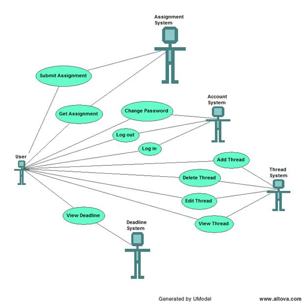

Bản đặc tả UseCase phần mềm MoodleMaster
Người lập:
Lê Văn Vang 0612548
Võ Quang Việt 0612564
I. Bối cảnh làm phần mềm: Trường ĐH Khoa Học tạo ra một moodle các môn học cho sinh viên xem thông tin về môn học, hỏi đáp, nộp bài …… Do sinh viên học một học kỳ có nhiều môn deadline mọc lên như nấm sinh viên có thể bị bỏ sót deadline của một số môn học. Để giúp sinh viên tránh tình trạng đó phần mềm quản lý deadline ra đời.
II. Danh sách các chức năng:
Ø Lấy deadline từ moodle và hiển thị cho người dùng.
Ø Thêm, xóa, sửa, xem các thread có trên moodle
Ø Nộp bài tập lên moodle, download các bài nộp.
III. Đặc tả chi tiết từng chức năng:
1.1 Tóm tắt:
- Chương trình khởi động cùng máy tính
- Mỗi ngày người dùng sẽ tự động được hệ thống cập nhật các deadline của môn học mình tham gia.
- Bảng deadline các môn học sẽ được hiển thị lên desktop giúp người dùng quan sát rõ ràng các deadline đang có.
- Trường hợp moodle bị die hoặc thay đổi format hoạt động thì phần mềm không bị lỗi
- Chương trình chỉ hiển thị những deadline chưa hết hạn.
1.2 Dòng sự kiện:
- Để sử dụng chức năng này người dùng phải đăng nhập
- Sau khi đăng nhập thành công chương trình sẽ hiển thị danh sách deadline của các môn user có học ở màn hình chính của chương trình.
- Khi người dùng kích chọn một deadline ở danh sách trên chương trình sẽ hiện ra màn hình nộp bài.
2.1 Tóm tắt:
- Mỗi khi có một deadline thì người dùng được phép nộp bài.
- Bài nộp có giới hạn dung lượng
- Có thể nộp nhiều lần và lưu lại nhật ký cho mỗi lần nộp.
- Trường hợp moodle die việc nộp bài sẽ bị thất bại.
2.2 Dòng sự kiện:
- Từ màn hình chính, người dùng chọn một deadline nào đó sẽ hiển thị ra màn hình nộp bài.
- Trong màn hình nộp bài sẽ có chức năng upload bài
- Chương trình sẽ kiểm tra nếu đã quá thời hạn thì sẽ khóa (không cho phép người dùng nộp bài)
- Ngược lại nếu vẫn chưa hết thời hạn nộp bài sẽ cho phép upload.
- Khi người dùng chọn file để nộp, chương trình sẽ kiểm tra dung lượng nếu đạt yêu cầu mới cho upload ngược lại sẽ xuất lỗi.
- Khi nộp bài thành công, chương trình sẽ tự động trở về màn hình chính.
3.1 Tóm tắt:
- Sau khi đã nộp bài, người dùng có quyền download những bài đã nộp.
- Nếu người dùng nộp nhiều lần trên một deadline, thì sẽ hiển thị tất cả những lần nộp đó để người dùng có thể chọn.
3.2 Dòng sự kiện:
- Từ màn hình chính, khi chọn chưc năng này thì sẽ hiển thị lên một màn hình.
- Màn hình này hiển thị danh sách tất cả các deadline đã có bài nộp (của người dùng đó).
- Khi kích chọn một deadline trong danh sách trên, sẽ hiển thị các file của deadline đó.
- Người dùng chọn lựa file và download file mình mong muốn
4.1 Tóm tắt:
- Chương trình hiển thị nội dung của toàn bộ thread mà người dùng có post bài.
- Khi có bài trả lời mới từ thread của người post bài này thì phải thông báo cho người sử dụng biết.
4.2 Dòng sự kiện:
- Danh sách các thread mới mà nguời dùng có post bài sẽ được hiển thị (tiêu đề) ở màn hình chính
- Khi người dùng chọn một thread từ danh sách trên sẽ hiển thị ra màn hình chứa nội dung chi tiết của thread đó.
- Ngòai ra từ màn hình chính sẽ hiển thị các môn mà người dùng đó có học, khi click vào một môn sẽ hiển thị ra tất cả các thread của môn học kèm theo các chức năng thêm mới một thread hay xóa một thread mà người dùng có post bài.
5.1 Tóm tắt:
- Ứng với mỗi môn mà người dùng có học, chức năng này cho phép tạo mới một thông tin để cho các user khác có thể xem và comment
5.2 Dòng sự kiện:
- Từ màn hình chính, người dùng sẽ chọn môn học muốn tạo thread.
- Sau đó, màn hình hiển thị danh sách các thread của môn học đã chọn ở trên, ở phía cuối màn hình này sẽ có các nút tạo mới thread.
- Khi người dùng kích vào nút này thì xuất hiện màn hình để cho người dùng nhập vào tiêu đề, nội dung.
- Sau khi đã nhập đầy đủ các thông tin, chương trình sẽ kiểm tra nội dung(tiêu đề và nội dung thread không được bõ trống, không chứa nội dung xấu(link sex, virus, …)
- Nếu thành công, chương trình sẽ chuyển về màn hình hiển thị nội dung thread vừa tạo mới(màn hình cho người dùng xem thread vừa tạo).
6.1 Tóm tắt:
- Trong khoảng thời gian 30 phút kể từ lúc tạo thread người dùng có quyền sửa lại nội dung của thread đó
- Thread sửa phải là thread do chính nguời đó tạo ra
6.2 Dòng sự kiện:
- Trong màn hình xem thread, ở phía dưới sẽ có nút để cho ngừời dùng chỉnh sửa thread.
- Chương trình sẽ kiểm tra thời gian tạo thread so với thời điểm hiện tại nếu lớn hơn 30 phút thì nút này sẽ không được hiển thị
- Khi kích vào nút này, một màn hình chỉnh sửa thread sẽ được hiện lên.
- Sau khi chỉnh sửa xong, chương trình cũng sẽ kiểm tra hợp lệ (giống như lúc tạo mới thread).
- Nếu thành công sẽ hiển thị nội dung thread vừa chỉnh sửa.
7.1 Tóm tắt:
- Tương tự như sửa thread, trong khoảng 30phút kể từ lúc tạo thread người dùng mới có quyền xóa thread
- Thread xóa phải là thread do chính nguời đó tạo ra
7.2 Dòng sự kiện:
- Trong màn hình xem thread, ở phía dưới cũng sẽ có nút để cho người dùng xóa thread.
- Chương trình cũng sẽ kiểm tra thời gian tạo thread với thời điểm hiện tại nếu lớn hơn 30 phút thì nút này cũng sẽ không được hiển thị.
- Khi kích chọn nút xóa, chương trình yêu cầu xác nhận có thực sự muốn xóa hay không.
- Nếu chấp nhận xóa, chương trình sẽ xóa thread đó và trở về màn hình danh sách các thread của môn học.
- Ngược lại sẽ không làm gì cả.
8.1 Tóm tắt:
- Mọi chức năng ở trên để sử dụng được yêu cầu người dùng phải đăng nhập, với username và password theo mặc định của moodle
- Trong màn hình này có chức năng lưu thông tin đăng nhập cho những lần sử dụng tiếp theo
8.2 Dòng sự kiện:
- Khi được khởi động, chương trình yêu cầu người dùng đăng nhập
- Nếu đăng nhập thành công, chương trình sẽ hiển thị lên giao diện của màn hình chính
- Nếu đăng nhập không thành công, chương trình yêu cầu đăng nhập lại
- Nếu người dùng có chọn chức năng lưu thông tin đăng nhập thì lần khởi động sau sẽ không yêu cầu đăng nhập nữa.
9.1 Tóm tắt:
- Chức năng cho phép người dùng thóat khỏi ứng dụng với thông tin đã được đăng nhập để người dùng khác có thể sử dụng.
- Chức năng này chỉ xuất hiện sau khi người dùng đăng nhập thành công
9.2 Dòng sự kiện:
- Từ màn hình chính sau khi đã đăng nhập thành công, màn hình đăng xuất sẽ hiện lên cho phép người dùng xác nhận đăng xuất.
- Sau khi đăng xuất thành công, sẽ trở về màn hình đăng nhập.
10. Đổi mật mã
10.1 Tóm tắt:
- Chức năng cho phép người dùng đổi mật mã.
- Chức năng này chỉ được hiển thị khi đã đăng nhập thành công
10.2 Dòng sự kiện:
- Từ màn hình chính khi người dùng kích chọn chức năng này thì màn hình đổi mật mã hiện lên.
- Màn hình này yêu cầu người dùng gõ lại password cũ và mật mã mới.
- Sau khi xác nhận hợp lệ, chương trình sẽ thông báo password đã được thay đổi thành công.
- Ngược lại, chuyển về màn hình chính.
IV. Đặc tả bổ sung:
1. Mục đích:
Mục tiêu của tài liệu này là để định nghĩa yêu cầu của Hệ thống Quản lý Deadline. Đặc tả bổ sung này thể hiện các yêu cầu chưa được thể hiện trong các Use cases. Đặc tả bổ sung này cùng với các use cases trong mô hình use case thể hiện đầy đủ các yêu cầu của hệ thống.
2. Phạm vi:
Đặc tả bổ sung áp dụng cho MoodleMaster do nhóm sinh viên thực hiện. Đặc tả này nêu rõ yêu cầu phi chức năng như tính khả dụng, tính ổn định, tính hiệu dụng, tính bảo mật…
3. Tài liệu tham khảo:
Không có.
4. Chức năng:
Hỗ trợ nhiều người sử dụng cùng lúc
5. Tính khả dụng:
Giao diện người dùng tương thích với môi trường Windows XP/Vista/7
6. Tính ổn định:
Hệ thống hoạt động ổn định 24/24 giờ, 7 ngày / tuần. Không có thời gian ngưng hoạt động, ngay cả khi đường mạng bị lổi, chương trình vẫn chạy ổn định.
7. Hiệu suất:
Hệ thống hỗ trợ 1000 người truy xuất cùng lúc.
Hệ thống hỗ trợ truy xuất CSDL với độ trễ không quá 15 giây.
8. Hiệu quả:
Chương trình có thể chạy thường trú nhưng chiếm dưới 2MB RAM
9. An toàn:
· Phải đảm bảo đúng và đủ các deadline.
· Tính năng nhắc lịch phải đảm bảo đúng ngày giờ ngay cả khi đồng hồ máy tính chạy sai.
10. Sự hỗ trợ:
Không có
11. Tính bảo mật:
Bảo đảm thông tin về tài khoản người sử dụng
12. Chất lượng:
· Không chỉ chạy với moodle của một trường Đại học
· Có tùy chọn để lọc thông tin lấy về
· Có nhiều cách để hiện thông tin lên desktop
· Có tính thẩm mỹ cao
· Chương trình tự động update khi có phiên bản mới.
V. Mô hình UseCase:

VI. Các thuật ngữ:
1. Moodle:
Là một hệ thống phần mềm được tạo ra để quản lý các khóa học. Tại đây người học sẽ có thể được học trực tuyến, download các bài giảng, các tài liệu, trao đổi thông tin, nộp bài…
2. Deadline:
Mỗi môn học trên moodle thường có rất nhiều bài tập, đồ án bắt buộc người theo học phải nộp đúng thời hạn, deadline chính là thời hạn đó. Nếu qua thời hạn này, người học sẽ không được quyền nộp bài.
3. Term:
Là một học kì, một học kì thì một sinh viên có thể đăng kí nhiều môn học. Một học kì có khoảng thời gian bắt đầu và kết thúc.
4. Subject:
Là danh sách các môn học được mở ra
5. OpenSubject:
Mỗi học kì có thể mở những môn học khác nhau, OpenSubect chính là môn học được mở trong 1 học kì.
6. Thread:
Là các bài thảo luận của các sinh viên, giáo viên. Trong một thread có nhiều người cùng tham gia. Mỗi môn học có nhiều thread được mở ra tùy theo số lượng chủ đề thảo luận.
7. Sinh viên:
Là người học tham gia các khóa học trên moodle